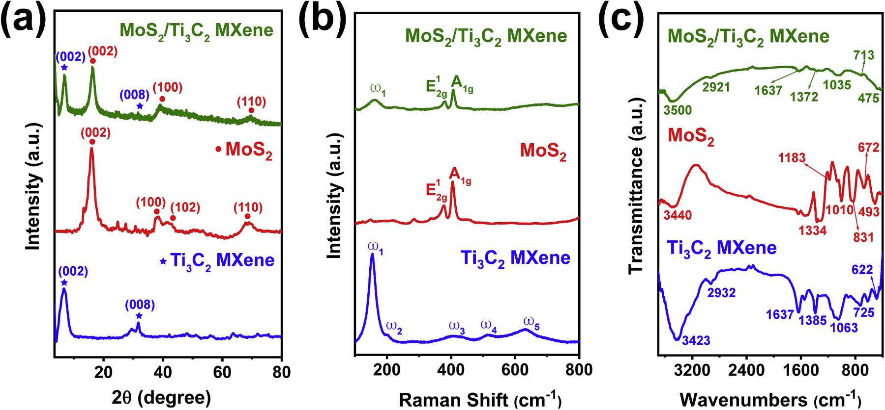
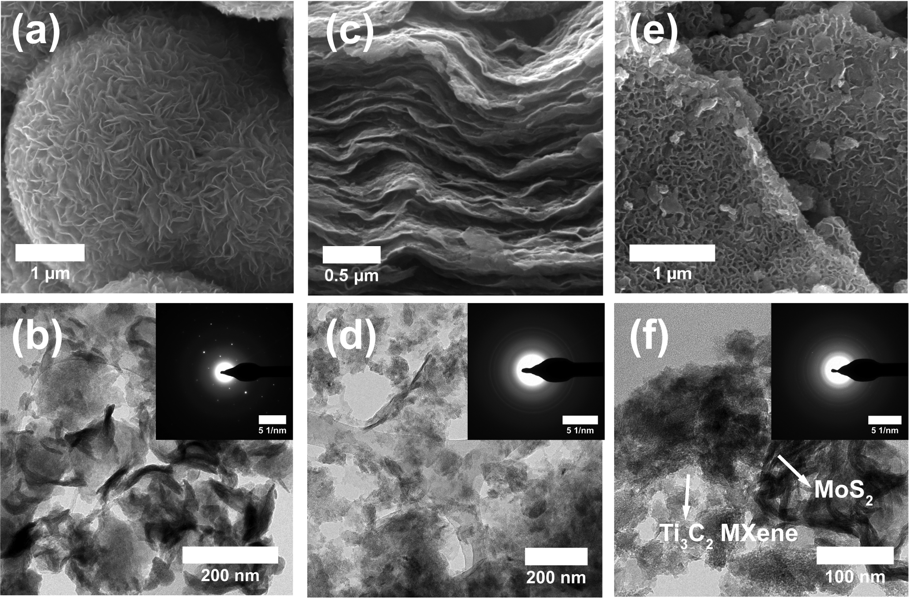
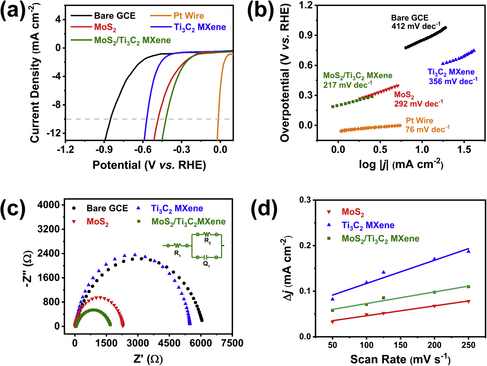
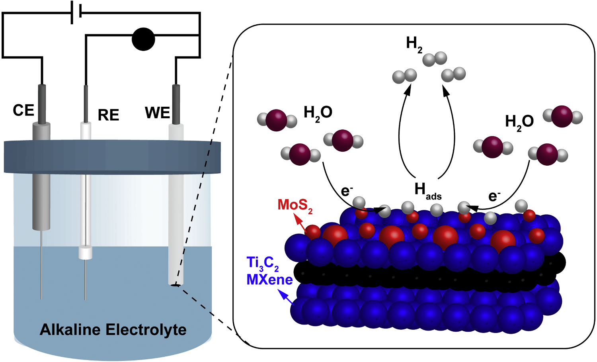

Ringkasan Singkat untuk Peneliti (4 Poin Utama)
1. Kebutuhan Media Basa: Reaksi evolusi hidrogen (HER) di lingkungan basa sangat diminati industri karena tidak mengikis elektroda layaknya media asam. Namun, reaksinya lambat karena membutuhkan energi tinggi untuk memecah molekul H₂O (tahap Volmer).
2. Keterbatasan Komponen Murni: MoS₂ memiliki tepi aktif berkemampuan tinggi menangkap hidrogen, tetapi bidang dasarnya lembam dan konduktivitas listriknya rendah. Sebaliknya, Ti₃C₂ MXene sangat konduktif dan hidrofilik, namun rentan mengalami restacking.
3. Rekayasa Hidrotermal 2D/2D: Menumbuhkan partikel MoS₂ bermorfologi bunga mekar di permukaan dan sela lapisan Ti₃C₂ MXene memperluas jarak antarlapis, mencegah agregasi, dan menciptakan antarmuka kontak listrik yang intim.
4. Hasil Uji Nyata: Menghasilkan overpotensial 421 mV pada 10 mA cm⁻², nilai Tafel slope 217 mV dec⁻¹, hambatan transfer muatan anjlok ke 1.66 kΩ, serta stabil selama 9000 detik pengujian kronoamperometri.
1. Tantangan Kinetika Basa dan Urgensi Pengganti Platina
Eksplorasi hidrogen sebagai vektor energi masa depan kini memasuki babak krusial. Selama beberapa dekade, produksi hidrogen dunia bertumpu pada perengkahan uap gas alam (steam reforming)—sebuah metode yang menghasilkan jejak karbon dioksida masif. Elektrolisis air menawarkan jalur bersih yang ideal, namun kelayakannya ditentukan oleh efisiensi elektrokatalis pada elektroda katoda tempat reaksi evolusi hidrogen (HER) berlangsung.
Dalam skala industri, HER pada media basa (seperti 1 M NaOH atau KOH) jauh lebih disukai dibandingkan media asam. Hal ini disebabkan stabilitas material elektroda yang jauh lebih tinggi akibat berkurangnya laju korosi dan disolusi. Namun, media basa menghadirkan tantangan kinetika yang berat. Berbeda dengan lingkungan asam yang kaya akan proton bebas (H⁺), larutan basa mengharuskan katalis untuk memutus ikatan molekul air (H₂O) terlebih dahulu guna menghasilkan proton teradsorpsi. Proses disosiasi air ini membutuhkan energi aktivasi tinggi sehingga reaksi berlangsung lamban (sluggish reaction kinetics).
Hingga kini, platina (Pt) tetap menjadi katalis rujukan dengan overpotensial yang sangat rendah (pada penelitian ini terukur hanya 16 mV pada 10 mA cm⁻²). Namun, kelangkaan dan biaya tinggi platina menjadi batu sandungan bagi produksi hidrogen terdesentralisasi skala besar. Oleh karena itu, para peneliti berfokus merancang material berlimpah berbasis kalkogenida logam transisi (TMD) dan karbida dua dimensi (MXene).
2. Desain Heterostruktur 2D/2D: Menautkan MoS₂ pada Ti₃C₂ MXene
Molibdenum disulfida (MoS₂) merupakan salah satu material TMD yang paling menjanjikan karena energi bebas Gibbs adsorpsi hidrogennya pada bagian tepi (edge sites) mendekati nilai platina. MoS₂ tersusun atas lapisan atom S–Mo–S yang terikat gaya van der Waals. Sayangnya, aktivitas katalitik MoS₂ hanya terkonsentrasi pada sisi tepi, sedangkan bidang dasarnya (basal plane) bersifat lembam. Selain itu, konduktivitas listrik MoS₂ murni relatif rendah dan lembaran nanosheet-nya cenderung saling menumpuk (aggregating).
Untuk mengatasi kelemahan tersebut, tim peneliti dari Universitas Indonesia mengintegrasikan MoS₂ dengan Ti₃C₂ MXene. Ti₃C₂ disintesis melalui pengikisan kimia selektif (selective chemical etching) terhadap lapisan aluminium dari fasa induk MAX (Ti₃AlC₂) menggunakan campuran LiF dan asam klorida (HCl), dilanjutkan dengan delaminasi menggunakan DMSO. Ti₃C₂ MXene memiliki konduktivitas logam yang luar biasa, permukaan hidrofilik dengan gugus terminasi aktif (–O, –OH, –F), serta luas permukaan yang lapang.

Rute hidrotermal pada suhu 100 °C selama 4 jam memungkinkan partikel MoS₂ bertumbuh di permukaan dan di antara celah antarlapisan Ti₃C₂ MXene. Struktur ini mencegah agregasi lembaran MoS₂ sekaligus memperbesar celah kontak difusi elektrolit.
3. Verifikasi Kristalinitas, Ikatan Kimia, dan Morfologi
Keberhasilan perakitan nanokomposit dikonfirmasi secara komprehensif melalui kombinasi difraksi sinar-X (XRD), spektroskopi Raman, spektroskopi inframerah transformasi Fourier (FTIR), serta mikroskopi elektron beresolusi tinggi (FESEM dan HRTEM).

Pada analisis FESEM dan TEM (Gambar 3), morfologi MoS₂ murni memperlihatkan bentuk kelopak bunga mekar (flower-like) yang tersusun atas lapisan-lapisan tipis dengan dispersi tinggi. Pola difraksi elektron area terpilih (SAED) menunjukkan titik terang difus yang membuktikan struktur kristal tunggal heksagonal.

Pengamatan mikroskopis mengonfirmasi bahwa penataan 2D di atas 2D ini menghasilkan antarmuka kontak luas yang menopang transfer elektron tanpa hambatan batas butir (grain boundaries).
4. Kinerja Elektrokimia: Penurunan Overpotensial dan Hambatan Muatan
Pengujian elektrokimia dijalankan menggunakan potensiostat tiga elektroda dalam larutan 1 M NaOH pada suhu ruang. Kinerja elektrokatalitik dibandingkan secara langsung antara elektroda kerja Glassy Carbon Electrode (GCE) telanjang, Ti₃C₂ MXene murni, MoS₂ murni, nanokomposit MoS₂/Ti₃C₂, serta kawat platina (Pt wire).

| Elektrokatalis | Onset Potensial (mV vs RHE) | Overpotensial @10 mA cm⁻² (mV) | Tafel Slope (mV dec⁻¹) | R_ct (kΩ) |
|---|---|---|---|---|
| Bare GCE | 479 | 850 | 412 | 6.09 |
| Ti₃C₂ MXene murni | 290 | 569 | 356 | 5.45 |
| MoS₂ murni | 162 | 481 | 292 | 2.28 |
| MoS₂/Ti₃C₂ MXene (Nanokomposit) | 146 | 421 | 217 | 1.66 |
| Kawat Platina (Pt wire benchmark) | 2 | 16 | 76 | - |
Berdasarkan Tabel 1, perbaikan nilai kinetika terlihat sangat mencolok. Kemiringan Tafel (Tafel slope) yang turun menjadi 217 mV dec⁻¹ mengindikasikan bahwa laju pembentukan hidrogen meningkat jauh lebih pesat terhadap penambahan overpotensial. Penurunan hambatan transfer muatan (R_ct) menjadi 1.66 kΩ menunjukkan bahwa elektron dari sirkuit luar mengalir bebas melalui lembaran MXene langsung menuju pusat-pusat aktif MoS₂.
| Elektrokatalis | Elektrolit | Overpotensial @10 mA cm⁻² (mV) | Tafel Slope (mV dec⁻¹) |
|---|---|---|---|
| Fe₂O₃/MoS₂/Ti₃C₂T_x MXene | 1 M KOH | 1376 | - |
| NiFe₂O₄/MXene | 1 M NaOH | 584 | 187.5 |
| Ti₃C₂T_x | 1 M KOH | 541 | 468 |
| MoS₂/NiO | 1 M NaOH | 530 | 232.6 |
| MoS₂/NiO/MWCNT | 1 M NaOH | 510 | 220 |
| HF-MXene | 1 M KOH | 444 | 311 |
| MoS₂/Ti₃C₂ MXene (Studi Ini) | 1 M NaOH | 421 | 217 |
5. Jalur Reaksi Volmer-Heyrovsky pada Antarmuka Komposit
Dalam elektrolit basa, reaksi evolusi hidrogen pada permukaan elektrokatalis (dilambangkan dengan M) secara umum mengikuti kombinasi dua tahap berurutan:

Nilai Tafel slope 217 mV dec⁻¹ mengindikasikan bahwa tahap Volmer bertindak sebagai tahap penentu laju reaksi (rate-determining step). Kehadiran Ti₃C₂ MXene berfungsi ganda: menyediakan jalan bebas hambatan bagi transport elektron sekaligus mencegah partikel MoS₂ saling bertumpukan. Pada saat yang sama, kelopak bunga MoS₂ menyediakan situs tepi aktif melimpah dengan energi pengikatan H_ads yang optimal, menurunkan barier aktivasi disosiasi air secara terukur.
6. Ketahanan Jangka Panjang dan Prospek Aplikasi
Selain efisiensi voltase, kestabilan operasional elektroda katoda merupakan penentu utama kelayakan aplikasi industri. Uji kronoamperometri pada densitas arus 10 mA cm⁻² selama 9000 detik (2,5 jam) menunjukkan arus yang stabil tanpa penurunan signifikan. Pengujian siklik voltammetri sebanyak 100 siklus pada daerah non-faradaik juga memperlihatkan bentuk profil yang hampir identik sebelum dan sesudah pengujian.
Keberhasilan perakitan nanokomposit 2D/2D MoS₂/Ti₃C₂ MXene melalui rute hidrotermal sederhana ini memberikan bukti kuat bahwa keterbatasan intrinsik masing-masing material dapat saling melengkapi. Pendekatan sinergis ini membuka arah baru bagi perancangan elektrokatalis bebas logam mulia yang tangguh, hemat biaya, dan berpotensi diterapkan dalam sistem elektrolisis air industri untuk memacu ekonomi hidrogen rendah karbon.
Hasanah, R., Romdoni, Y., Fauzia, V., Arifutzzaman, A., Hussin, F., Aroua, M. K., & Khalil, M. (2025). Two-dimension MoS₂/Ti₃C₂ MXene nanocomposite for an efficient hydrogen evolution reaction in alkaline media. Materials Research Bulletin, 190, 113514. https://doi.org/10.1016/j.materresbull.2025.113514